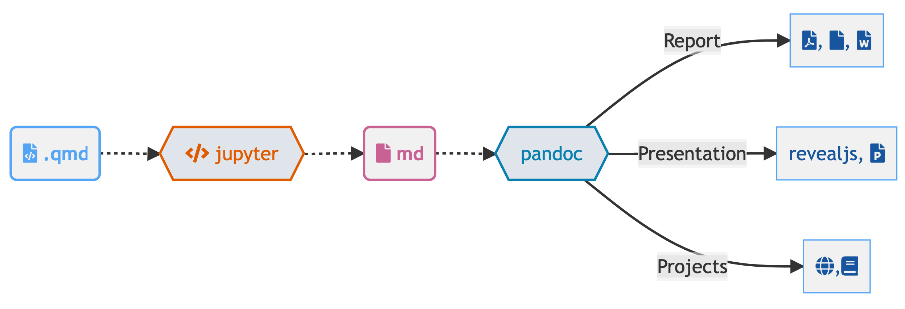

4 Quarto
Quarto is an open-source document creation system based upon a tool called Pandoc.
These tools allow you to weave together, raw data, analysis code, analysis output, graphics, and interactive elements into a single document that can be turned into a wide variety of products.
This means that you do not have to copy-paste from analysis -> Excel -> Word -> Powerpoint -> etc.
4.1 So what is Quarto really?
Quarto is an open source scientific and technical publishing system makes the process of workign with data, analyzing it, and writing it up suck just a little bit less by streamlining how we create content for:
- HTML reports, blogs, and websites.
- PDF, RTF, & Word documents.
- Presentations (PowerPoint, Beamer, revealjs).
- Technical Books & Journal Articles.
- Dashboards.
- Projects.
5 How Quarto Works
5.1 Implementation != Interface

5.2 Language Agnostic (Python or Julia)

5.3 Interface Agnostic


6 Getting Quarto
6.1 Downloading
Quarto is a document processing system and must be installed on your computer to be accessed from inside RStudio, VSCode, etc.
https://quarto.org has the latest version of the executable. Visit the site and download the proper version for your computer.
The version used for this document was r system("quarto --version", intern=TRUE)
6.2 Quarto Document Creation in RStudio
6.3 Visual vs. Source Editor
The latest versions of RStudio have a source and visual editor for quarto documents.
6.4 “Just Say No” To Visual Editors

6.5 Rendering A Quarto Document
To create a document from your markdown, use the Render button in the toolbar.

Depending on your configuration and the document type, the output will be displayed within either RStudio or in an external viewer (PDF, Word, etc.).